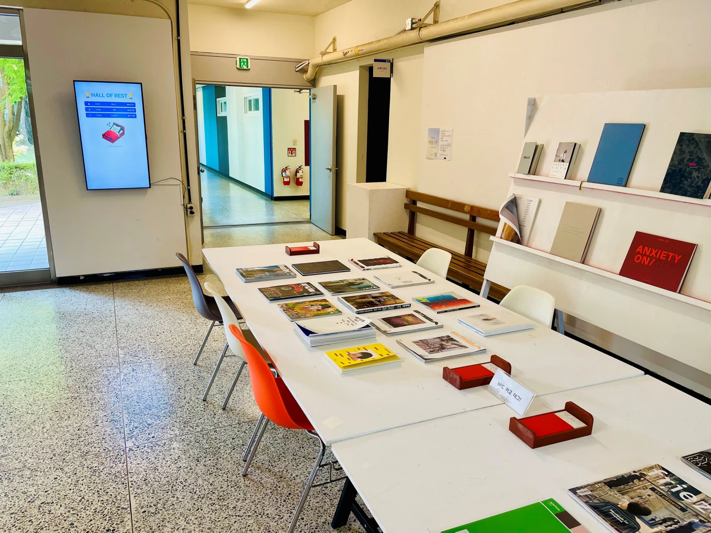

2025 / Gamification / Digital Wellbeing
I Need Rest
A gamification project where people compete over how long they can put their phones to sleep. A small phone bed, a rest timer, and a shared leaderboard turn putting a phone down into a playful invitation to take a break.
An invitation to put the phone down
The project began with a shared table intended for conversation and reading. Smartphone use had become a frequent part of that space, and I wanted to encourage people to choose a break from their devices.
I gave the phone a place to sleep: a small, 3D-printed bed. Participants can put their phones to rest, record the time, and compare it with others through a shared leaderboard.

How a rest session works
Wake up the web app
An NFC tag on the phone bed opens the mobile web app. The participant enters a name and the activity they plan to do while taking a break.
Put the phone to sleep
After sensor permission is granted, the timer starts and the phone’s initial orientation is recorded as a baseline.
Leave it resting
The app watches changes in the phone’s tilt. A change of more than one degree on either monitored axis ends the session.
Share the time
The duration, name, and intended activity are saved to Firebase. The Hall of Rest leaderboard displays records ordered by rest duration.
Making a small action playful
The bed makes the idea of a sleeping phone easy to recognize. Recording and sharing the time gives participants a reason to try the activity and return to it. Competition becomes part of the invitation to put the phone down.
The phone supplies its own motion sensing, so the physical object can remain simple. NFC connects the bed to the web app, and the shared display makes individual participation visible in the space.
Installation in a shared space

I installed and operated the system in a real shared space, combining phone beds on the table with a public leaderboard. This brought the object, the web interaction, and feedback from other participants into the same setting.
The records indicate participation in the phone-down activity. Understanding the quality of the break and whether the experience changes everyday phone use would require further evaluation.
Implementation and contribution
This was an individual project. I designed the interaction, fabricated the phone beds, developed the web app and database connection, integrated the leaderboard, and managed installation and operation.
- Web application
- JavaScript and smartphone orientation sensing
- Records and feedback
- Firebase Realtime Database and a shared leaderboard
- Physical interaction
- NFC tags, SketchUp, and 3D-printed phone beds